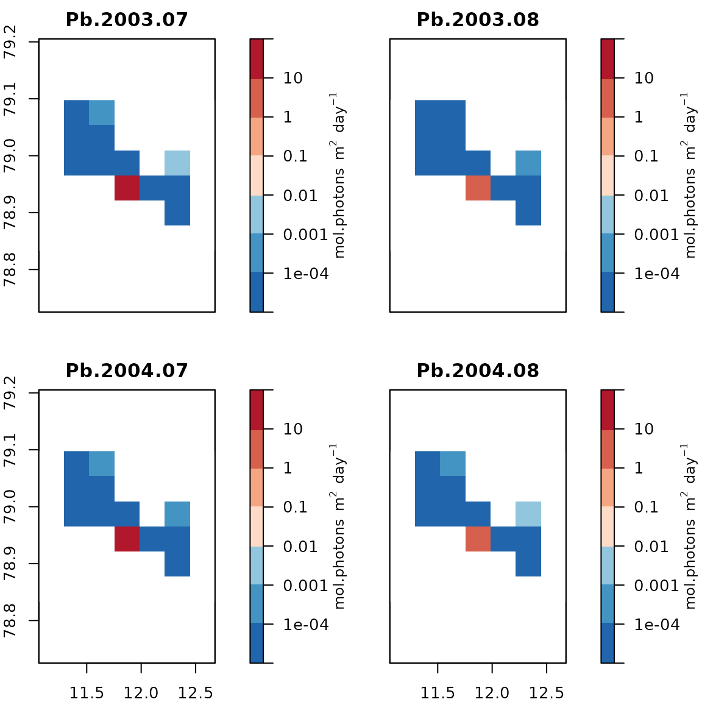

FjordLight Example
Bernard Gentili & Robert Schlegel
2023-10-19
Source:vignettes/fl_example.Rmd
fl_example.RmdOverview
The FjordLight package has been built
explicitly to facilitate the use of Arctic fjord PAR dataset developed
via the FACE-IT project.
FACE-IT has received funding from the European Union’s Horizon 2020
research and innovation programme under grant agreement no. 869154. This
dataset was a development of that created by Gattuso et al. (2020).
Below one will find a range of examples that should help to clarify the useful order of these functions in a workflow. All of these examples are also available within the help files for the given functions.
Caveat emptor
With 64 GB of RAM (a typical desktop) your computer should have no
problem loading the data, even with the most extensive fjords. With 4 GB
(a typical laptop) you can only handle the smaller fjords: ‘kong’,
‘young’, and ‘nuup’. However if you do not need the monthly
PARbottom time series, the package should work with all
fjords. In this case, when calling the fl_LoadFjord()
function, set the TS argument to FALSE (this
is the default value).
Workflow
List of available fjords
fl_ListFjords()
#> [1] "disko" "is" "kong" "nuup" "por" "stor" "tromso" "young"Download a fjord and load it as a list
# Choose a fjord from the list above
fjord <- "kong"
# If the file has already been downloaded a message will be shown
# A default directory is created at "~/FjordLight.d"
fl_DownloadFjord(fjord)
#> kong already downloaded in directory FjordLight.d
WANT_TIME_SERIES <- TRUE
fjorddata <- fl_LoadFjord(fjord, TS = WANT_TIME_SERIES)
str(fjorddata, list.len = 15)
#> List of 31
#> $ name : chr "kong"
#> $ longitude : num [1:321(1d)] 11.2 11.2 11.2 11.2 11.2 ...
#> $ latitude : num [1:290(1d)] 78.9 78.9 78.9 78.9 78.9 ...
#> $ Months : num [1:8(1d)] 3 4 5 6 7 8 9 10
#> $ Years : num [1:20(1d)] 2003 2004 2005 2006 2007 ...
#> $ irradianceLevel : num [1:101(1d)] 0.001 0.0011 0.0012 0.00132 0.00145 ...
#> $ depth : num [1:321, 1:290] NaN NaN NaN NaN NaN NaN NaN NaN NaN NaN ...
#> $ elevation : num [1:321, 1:290] NaN NaN NaN NaN NaN NaN NaN NaN NaN NaN ...
#> $ area : num [1:321, 1:290] 0.00983 0.00983 0.00983 0.00983 0.00983 ...
#> $ AreaOfCoastalZone : num 205
#> $ AreaOfShallowZone : num 106
#> $ site_average_longitude: num 11.8
#> $ site_average_latitude : num 79
#> $ MonthlyPARbottom : num [1:321, 1:290, 1:8, 1:20] NaN NaN NaN NaN NaN NaN NaN NaN NaN NaN ...
#> $ ClimPARbottom : num [1:321, 1:290, 1:8] NaN NaN NaN NaN NaN NaN NaN NaN NaN NaN ...
#> [list output truncated]If you want to download in a custom directory use :
fl_DownloadFjord(fjord , dirdata = "MyDirectory")
fjorddata <- fl_LoadFjord(fjord, dirdata = "MyDirectory")Get geographic parameters
flget_geoparameters(fjorddata)
#> site_average_longitude site_average_latitude AreaOfCoastalZone
#> 11.8450 78.9800 205.4384
#> AreaOfShallowZone
#> 105.7447Get bathymetry
# all depths (what = "o" ; o for Ocean), as raster
bathy <- flget_bathymetry(fjorddata, what = "o", mode = "raster", PLOT = TRUE)
# coastal zone [0-200m] (what = "c" ; c for Coastal), as raster
bathy <- flget_bathymetry(fjorddata, what = "c", mode = "raster", PLOT = TRUE)
# shallow zone [0-50m] (what = "sl" ; s for Shallow, l to add land), as raster
bathy <- flget_bathymetry(fjorddata, what = "sl", mode = "raster", PLOT = TRUE)
# as 3 columns data frame (mode = "3col" : longitude, latitude, depth)
sea <- flget_bathymetry(fjorddata, what = "s", mode = "3col", PLOT = FALSE)
cz <- flget_bathymetry(fjorddata, what = "c", mode = "3col", PLOT = FALSE)
# you may add letter "l" if you want land elevation
sealand <- flget_bathymetry(fjorddata, what = "sl", mode = "3col", PLOT = FALSE)
# Example of structure
str(sea)
#> 'data.frame': 93090 obs. of 3 variables:
#> $ longitude: num 11.2 11.2 11.2 11.2 11.2 ...
#> $ latitude : num 79.1 79.1 79.1 79.1 79.1 ...
#> $ depth : num NaN NaN NaN NaN NaN NaN NaN NaN NaN NaN ...Get climatologies of PAR0m, Kpar, and PARbottom
# PAR0m and PARbottom for July
P07 <- flget_climatology(fjorddata, "PAR0m", "Clim", month = 7, PLOT = TRUE)
print(P07)
#> class : RasterLayer
#> dimensions : 290, 321, 93090 (nrow, ncol, ncell)
#> resolution : 0.00462, 0.000883 (x, y)
#> extent : 11.1738, 12.65682, 78.85438, 79.11045 (xmin, xmax, ymin, ymax)
#> crs : +proj=longlat +datum=WGS84 +no_defs
#> source : memory
#> names : PAR0m_Jul
#> values : 11.14298, 32.43196 (min, max)
Pb7 <- flget_climatology(fjorddata, "PARbottom", "Clim", month = 7, PLOT = TRUE)
print(Pb7)
#> class : RasterLayer
#> dimensions : 290, 321, 93090 (nrow, ncol, ncell)
#> resolution : 0.00462, 0.000883 (x, y)
#> extent : 11.1738, 12.65682, 78.85438, 79.11045 (xmin, xmax, ymin, ymax)
#> crs : +proj=longlat +datum=WGS84 +no_defs
#> source : memory
#> names : PARbottom_Jul
#> values : 6.354513e-37, 30.41457 (min, max)
# PARbottom Global
PbG <- flget_climatology(fjorddata, "PARbottom", "Global", PLOT = TRUE)
print(PbG)
#> class : RasterLayer
#> dimensions : 290, 321, 93090 (nrow, ncol, ncell)
#> resolution : 0.00462, 0.000883 (x, y)
#> extent : 11.1738, 12.65682, 78.85438, 79.11045 (xmin, xmax, ymin, ymax)
#> crs : +proj=longlat +datum=WGS84 +no_defs
#> source : memory
#> names : PARbottom_Global
#> values : 2.293755e-24, 18.12253 (min, max)
# PAR0m and Kpar for year 2012 as 3 columns data frame
P02012 <- flget_climatology(fjorddata, "PAR0m", "Yearly", year = 2012, mode = "3col")
k2012 <- flget_climatology(fjorddata, "Kpar", "Yearly", year = 2012, mode = "3col")
head(k2012)
#> longitude latitude Kpar_2012
#> 1 11.17611 79.11 NaN
#> 2 11.18073 79.11 NaN
#> 3 11.18535 79.11 NaN
#> 4 11.18997 79.11 NaN
#> 5 11.19459 79.11 NaN
#> 6 11.19921 79.11 NaNI f you want to group the “3col” data
# first get pixels area
area <- flget_area(fjorddata, mode = "3col")
# then group 3col data
data <- cbind(sea, area[3], P02012[3], k2012[3])
head(data)
#> longitude latitude depth PixArea_km2 PAR0m_2012 Kpar_2012
#> 1 11.17611 79.11 NaN 0.009610375 NaN NaN
#> 2 11.18073 79.11 NaN 0.009610375 NaN NaN
#> 3 11.18535 79.11 NaN 0.009610375 NaN NaN
#> 4 11.18997 79.11 NaN 0.009610375 NaN NaN
#> 5 11.19459 79.11 NaN 0.009610375 NaN NaN
#> 6 11.19921 79.11 NaN 0.009610375 NaN NaNGet monthly time series of PARbottom
# Years 2003 to 2004 - months July to August
mts <- flget_PARbottomMonthlyTS(fjorddata, month = 7:8, year = 2003:2004, PLOT = TRUE)
# All months - all years - as data.frame : columns = months (8, March to October) * years (20, 2003 to 2022) + 2 (lon lat) = 162
# NB: This will create a rather large object in your environment
# mts_full <- flget_PARbottomMonthlyTS(fjorddata, mode = "3col", PLOT = FALSE)P-functions
# as a function
fG <- flget_Pfunction(fjorddata, period = "Global", plot = FALSE)
# then you can use it; for instance :
irradiance_levels <- c(0.1, 1, 10)
fG(irradiance_levels)
#> [1] 18.217188 9.923390 1.926403
# as a 2 column data.frame
f2012 <- flget_Pfunction(fjorddata, period = "Yearly", year = 2012, mode = "2col")
str(f2012)
#> 'data.frame': 101 obs. of 2 variables:
#> $ irradianceLevel: num 0.001 0.0011 0.0012 0.00132 0.00145 ...
#> $ Pcoastal_2012 : num 31.5 31.2 31 30.8 30.6 ...
# Plot P-functions
fGlob <- flget_Pfunction(fjorddata, type = "coastal", period = "Global", PLOT = TRUE, lty = 1, col = 1, lwd = 2,
Main = paste(fjord, "coastal P-functions"), ylim = c(0, 50))